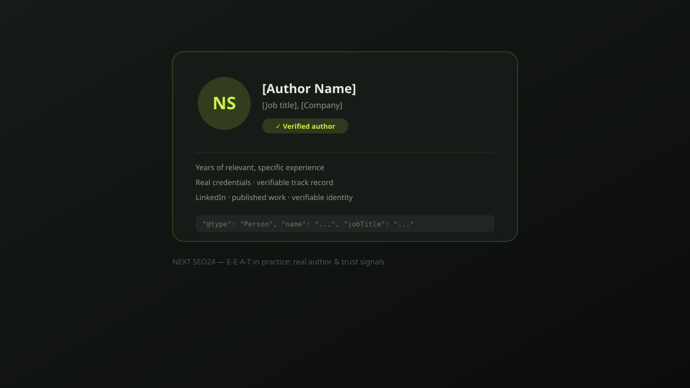

E-E-A-T in practice: building real author pages and trust signals
We still audit sites where every article is published under "Admin" or "Team" with no bio, no photo, and no way to verify anyone behind the content is real. That's not a minor gap — it's the single easiest E-E-A-T fix available, and most competitors still haven't done it. Here's what an author page needs to actually work, with real implementation detail.
What "Experience" actually added to E-A-T
Google added "Experience" to the original E-A-T framework in late 2022, specifically to reward content built on genuine, first-hand use of a product or a real visit to a place — not just secondhand summary of what other sources already say. For YMYL topics (health, finance, safety) the bar is considerably higher. In practice, this means a reviewer who actually used the product, or a practitioner writing from real client work, carries more weight than a generalist rewriting research.
What a real author bio actually needs
- A real name and photo. Stock photos and generic "our team" illustrations are a visible tell — use an actual photo of the actual person.
- Specific, verifiable experience. "8 years managing SEO for regional e-commerce brands" is verifiable and useful; "SEO expert" alone is neither.
- Links to a real, checkable identity. A LinkedIn profile, a list of other published work, or a professional credential a reader could actually go verify.
- A link to everything else they've written on the site. An author archive page signals a real body of work, not a one-off byline attached for appearances.
- Honest disclosure where it matters. If AI tools assisted drafting, Google's own "who, how, why" guidance says that's fine as long as a real, accountable person reviewed and stands behind the result — the byline should reflect that reality.
Implementing Person schema correctly
Structured data doesn't create trust by itself, but it makes the trust signals you do have machine-readable. A minimal, honest example for an author page:
{
"@context": "https://schema.org",
"@type": "Person",
"name": "Jane Author",
"jobTitle": "SEO Strategist",
"worksFor": { "@type": "Organization", "name": "Your Company" },
"url": "https://example.com/authors/jane-author",
"sameAs": [
"https://www.linkedin.com/in/jane-author",
"https://twitter.com/janeauthor"
]
}On each article, reference that same author consistently in the Article schema's author field rather than defaulting every page to a generic organization — the two should point at the same real, checkable identity.
Company-level trust signals that reinforce individual E-E-A-T
Author-level signals work best alongside company-level ones. A genuine About page with a real address and business registration, visible contact information, a clear editorial or content policy, and consistent business details across the site all reinforce the same message: this is a real, accountable organization, not an anonymous content mill. This matters most for anything adjacent to YMYL topics, where trust signals carry disproportionate weight.
What not to do
- Inventing a fictional author. A fabricated name with a stock photo and invented credentials is easy to spot and actively damages trust once discovered — including by readers, not just algorithms.
- Generic "our team of experts" bylines with no individual behind them. This provides none of the verifiability that makes author signals work in the first place.
- Hollow, AI-generated bios. A bio that reads as generic filler ("passionate about helping businesses grow") without a single specific, checkable detail defeats the purpose even if a real person exists behind it.
A quick self-audit
- Does every published article show a real named author, not "Admin" or "Team"?
- Does each author have a bio page with a real photo and specific, verifiable experience?
- Can a reader click through to a real LinkedIn profile or other checkable identity?
- Is
Personschema implemented and linked consistently across every article by that author? - Does your About page have real, specific business details — not a generic paragraph?
If you'd like us to run this audit against your own site, send it over — we'll tell you plainly which signals are missing.
Frequently asked questions
Does adding an author bio and Person schema guarantee better rankings?
No single signal guarantees a ranking change. Author information and structured data are trust and clarity signals that support Google's broader quality assessment — they work alongside genuine expertise and good content, not as a standalone fix.
Is it fine to use AI to help write author-attributed content?
Yes, based on Google's own "who, how, why" guidance — AI assistance is not the issue. What matters is that a real, accountable, named person reviewed and stands behind the content, and that it reflects genuine expertise rather than being published unreviewed.
Do small businesses without individual "experts" need author pages too?
Yes, though the framing differs. A small business can attribute content to a real founder or team member with genuine, specific experience rather than inventing generic "expert" credentials — specificity and verifiability matter more than seniority.
Want your E-E-A-T signals actually reviewed, not guessed at?
Send us your site and we'll run this exact audit — what's missing, what's weak, and what to fix first. No obligation.
Chat on WhatsApp →